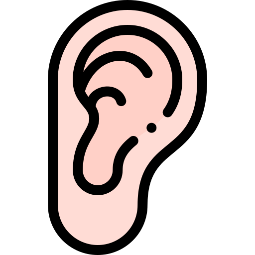
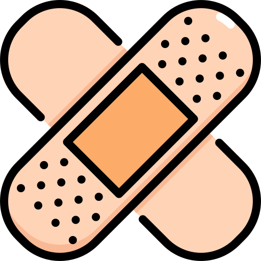

Nuestro trabajo se organiza en tres etapas fundamentales

Evaluación
Realizamos estudios y evaluaciones para conocer el funcionamiento del oído, la audición y el equilibrio, aportando información complementaria para orientar un diagnóstico preciso.

Diagnóstico
A partir de la evaluación clínica y de los estudios correspondientes, nuestros profesionales buscan identificar el origen de los síntomas y determinar el diagnóstico más adecuado para cada paciente.



Tratamiento
El tratamiento se define de acuerdo con el diagnóstico y las necesidades de cada caso. Puede incluir tratamiento medicamentoso, seguimiento clínico o tratamiento quirúrgico.

Atención interdisciplinaria
Algunos casos requieren la participación de más de una especialidad. En Tagle, el paciente puede ser acompañado dentro del mismo centro por profesionales de distintas áreas, facilitando una atención coordinada e integral.

Atención de adultos y niños
Contamos también con atención especializada en Otorrinolaringología Pediátrica, orientada a la evaluación y tratamiento de las patologías de oído, nariz y laringe durante las distintas etapas del desarrollo.